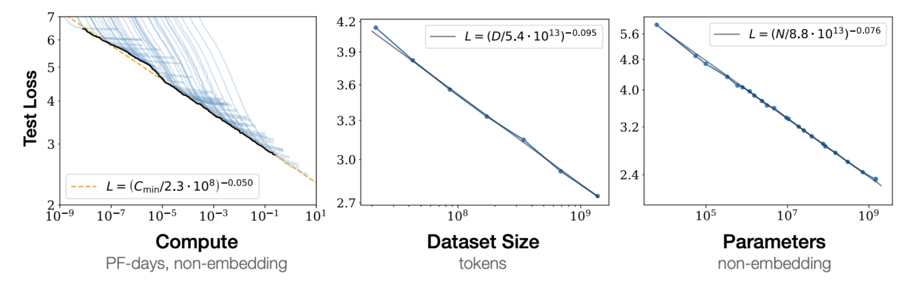
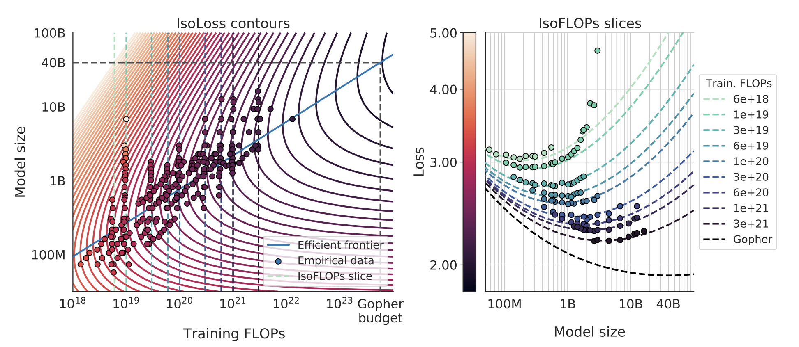

If you make a language model larger, or train it on more data, its loss goes down. What's non-obvious is that these improvements follow clean power laws; straight lines on a log-log plot, over many orders of magnitude. These scaling laws have supposedly become an important part of how frontier labs plan training runs, allocate compute, and decide when to scale up (I emphasize supposedly, I wouldn't know myself). This post is a quick, high-level tour of the key ideas and open questions.
Kaplan et al.: the original observation
Kaplan et al. (2020) trained a large suite of language models and found that test loss follows power laws in the number of parameters $N$, the number of data tokens $D$, and the compute budget $C$*:
$$ L(x) \sim x^{-\alpha_x} $$for each of $x \in \{N, D, C\}$, with different exponents $\alpha_x$. The fit is good across several orders of magnitude.
*$C$ is measured in FLOPs (floating point operations) and counts the total across the entire training run, including all forward and backward passes. One could also talk about the FLOPs of a single forward/backward pass, which characterizes the model's cost per step. Confusingly, FLOPS with a capital S (or FLOP/s) is a different thing: floating point operations per second, a measure of hardware throughput that depends on architecture and hardware.

Ignoring some batch size details in the paper, Kaplen et al. fit three separate power laws for the regime where each factor is the bottleneck and the others are sufficiently large:
$$ L(N) = \left(\frac{N_c}{N}\right)^{\alpha_N}, \quad L(D) = \left(\frac{D_c}{D}\right)^{\alpha_D}, \quad L(C_{\min}) = \left(\frac{C_c^{\min}}{C_{\min}}\right)^{\alpha_C^{\min}} $$with $\alpha_N \approx 0.076$, $\alpha_D \approx 0.095$, and $\alpha_C^{\min} \approx 0.050$, where $N_c$, $D_c$, and $C_c^{\min}$ are fitted constants. Notice that $\alpha_N > \alpha_D$. That is, loss is more sensitive to $N$ than to $D$ in their study regime. This led to a practical recommendation: for a fixed compute budget, make the model large and don't worry as much about data.
Chinchilla: actually, scale the data too
Hoffmann et al. (2022), "the Chinchilla paper", revisited this and came to a different conclusion. They fit a joint law of the form
$$ L(N, D) = E + \frac{A}{N^{\alpha}} + \frac{B}{D^{\beta}}, $$where $A$ and $B$ are fitted constants and $E$ is an irreducible loss floor (for NLL this is the entropy of the data, though the precise definition depends on how the loss averages over context positions/lengths).
The compute cost of a single training run is approximately $C \approx 6ND$ (see why $6ND$ at the bottom of this post). To find the best allocation of a fixed budget $C$, you substitute $D = C/(6N)$ and optimize over $N$. The optimal split depends on the exponents $\alpha$ and $\beta$: if they're roughly equal (as Chinchilla's fits suggest, both around 0.34), you get $N^* \propto C^{0.5}$ and $D^* \propto C^{0.5}$. In other words, this finding says that model size and data should scale equally with compute. This is the "Chinchilla-optimal" allocation, and it implied that many existing large models (e.g. Gopher) were undertrained relative to their size: you could get a better model by training a smaller one on more data. Supposedly, frontier labs took this seriously, and this shaped training decisions for the next generation of models.

If you're curious about the derivation: substitute $D = C/(6N)$ into the loss to get $L(N) = E + A N^{-\alpha} + B (6N/C)^{\beta}$. Take the derivative and set it to zero: $\alpha A N^{-\alpha - 1} = \beta B (6/C)^{\beta} N^{\beta - 1}$. Solving for $N$ gives $N^* \propto C^{\beta/(\alpha + \beta)}$, and plugging back in gives $D^* \propto C^{\alpha/(\alpha + \beta)}$. When $\alpha = \beta$, both exponents equal $1/2$ and you get equal scaling. When $\alpha \neq \beta$, the budget tilts toward whichever factor has the larger exponent. This is why Kaplan's asymmetric exponents led to "scale the model" while Chinchilla's symmetric exponents led to "scale both model and data equally."
That said, the Chinchilla result has faced scrutiny. Besiroglu et al. (2024) found that the reported estimates are hard to reproduce and sensitive to methodological choices. The qualitative message (scale data too) has held up; the precise exponents remain debated.
Why people study one factor at a time
The Kaplan/Chinchilla loss have additive structure. The model size and data contributions enter as separate terms, and there are no cross terms. If you believe this decomposition, you could in theory study each factor in isolation, e.g., fix the model and study the loss's relationship to varying data size. Then, you could plug the pieces back together. Several recent works have taken this approach, and it makes the empirical and theoretical work more tractable*. Though, the assumption on additive terms with no cross terms is probably approximate.
*I sometimes cringe when I add a modifier like "more" or "less" on a word that seems binary (more tractable, less perfect, even more optimal, etc...)
Where do the exponents come from?
The work above is primarily empirical: fit curves, read off exponents. But one accumulates a list of questions. Why power laws? Can we predict the exponents from properties/statistics of the data itself?
A recent line of work from Surya Ganguli's group tackles this. Cagnetta, Raventós, Ganguli & Wyart (2024) derive a formula predicting the data-scaling exponent $\alpha_D$ from two measurable corpus statistics: how fast conditional entropy (of next token given context) decays with context length ($\gamma$), and how fast token correlations decay with lag ($\beta$). The claim is that $\alpha_D = \gamma / (2\beta)$, with no free parameters and no dependence on model architecture. If it holds, you could predict how fast a model will learn from a dataset just by measuring statistical properties of the text before training anything. Here, the statistics serve as intrinsic hardness measures of the data, a way to quantify how much structure a corpus has for a model to exploit. However, a criticism here is that conditional entropy and other types of correlations are notoriously/provably hard to estimate accurately... (i'll try to add some links explaining/proving that here).
What's still open
Scaling laws are now an established research area and (supposedly) widely used in practice, but far from settled as a science. Some directions that remain open seem to be:
- the additive decomposition breaks down. The $A/N^\alpha + B/D^\beta$ form assumes model and data bottlenecks don't interact. But modern practice often trains well beyond Chinchilla-optimal (Llama-3-8B uses ~2000 tokens per parameter), and in this "overtrained" regime the additive form starts to crack. Feature learning (when model weights move meaningfully away from initialization) creates interaction terms that the simple decomposition misses.
- data mixtures. Real training corpora are heterogeneous (web + code + books + math). Each domain presumably has its own scaling behavior. How do per-domain exponents combine? Nobody has a clean theory here, though there's growing empirical work on data mixing laws (e.g. Ye et al., 2024).
- model architecture dependence. The Cagnetta et al. formula is architecture-independent because it lives in the data-limited regime. But in the model-limited regime, scaling exponents should depend on the architecture's capacity to exploit context; transformers vs. SSMs vs. hybrids should give different exponents. Bordelon et al. have made progress here with a dynamical theory connecting feature learning to scaling, but a complete picture is still missing.
- beyond language. Scaling laws have been observed for images, video, code, and multimodal models, but the exponents differ across modalities. Can the same theoretical frameworks explain all of them?
- downstream performance. Scaling laws are usually stated for pretraining loss. But what practitioners care about is downstream task performance, which doesn't always track loss in a simple way. The relationship between loss scaling and capability scaling is murky (see the discussion around Wei et al., 2022 on "emergent abilities" and Schaeffer et al., 2023 arguing these are artifacts of metric choice).
Why $C \approx 6ND$
The factor of 6 falls out of counting the floating point operations in a single training step of a dense transformer.
Forward pass. The cost of a forward pass is dominated by matrix multiplications (the attention projections and the FFN layers). A matrix multiplication of size $(m \times k) \cdot (k \times n)$ takes roughly $2mkn$ FLOPs (one multiply and one add per output element). When you sum this up across all layers, the total comes out to approximately $2N$ FLOPs per token, where $N$ is the parameter count.
Backward pass. The backward pass costs about $2 \times$ the forward pass, so roughly $4N$ FLOPs per token. The factor of 2 is because you need two matmuls of similar size at each layer: one to get the gradient with respect to the activations (for backpropagation to further layers) and one to get the gradient with respect to the weights (for the parameter update at this layer).
So the total per token is $2N + 4N = 6N$, and over $D$ tokens the full training cost is $C \approx 6ND$.
A few caveats: the factor of 6 is an approximation that works well when the parameter count is dominated by the linear projections (attention QKV/output and FFN), which is the case for large dense transformers. It ignores attention score computation, layernorm, softmax, and embedding lookups, but these are a small fraction of total FLOPs for large models. It also assumes a standard dense architecture (for mixture-of-experts models, only a subset of parameters are active per token, so the effective $N$ per token is smaller).
Further reading
- Kaplan et al. (2020) — the original scaling laws paper.
- Hoffmann et al. (2022) — Chinchilla: training compute-optimal large language models.
- Cagnetta, Raventós, Ganguli & Wyart (2024) — deriving scaling exponents from corpus statistics.
- Bordelon, Atanasov & Pehlevan (2024) — a dynamical model of neural scaling laws with feature learning.
- Henighan et al. (2020) — scaling laws across modalities.